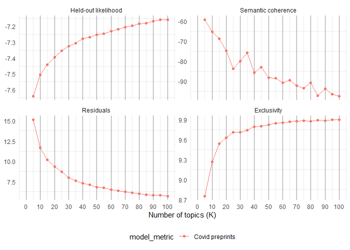
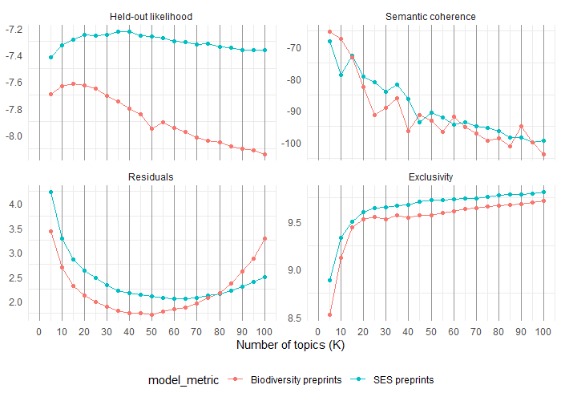
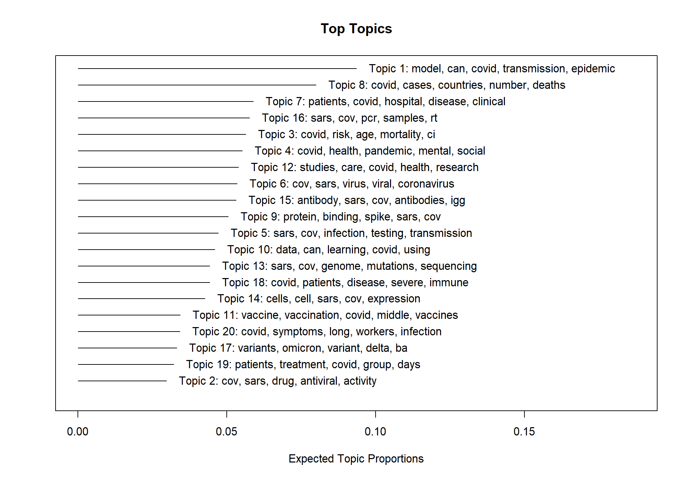
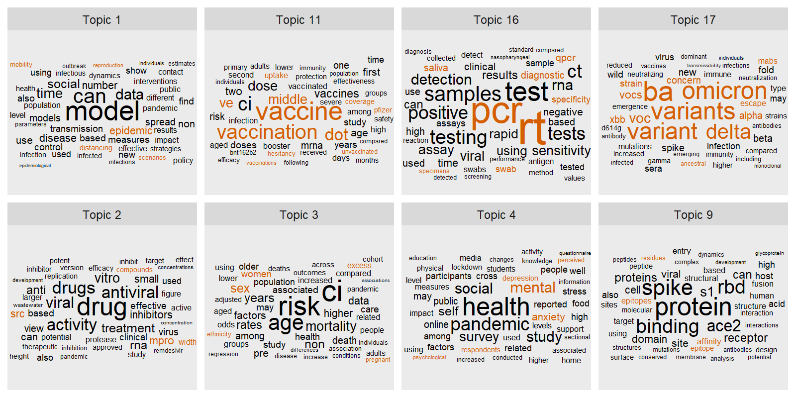
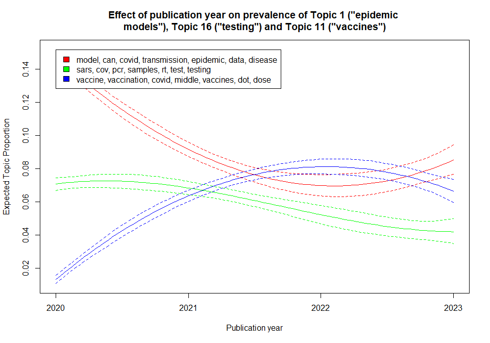
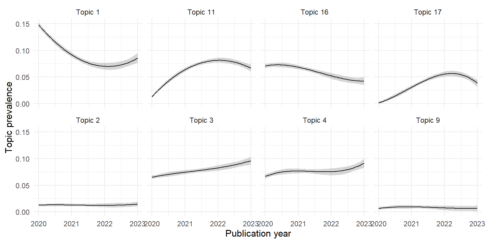
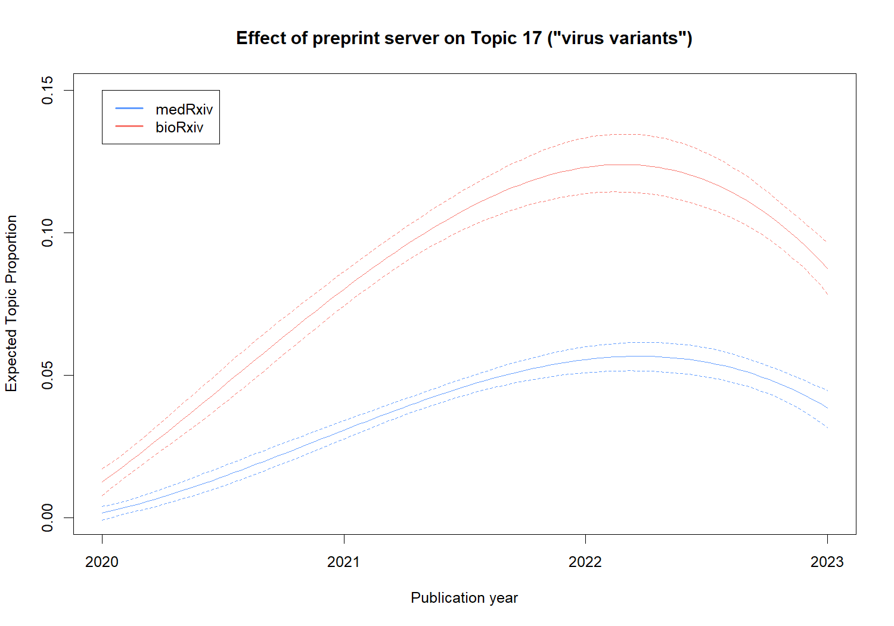
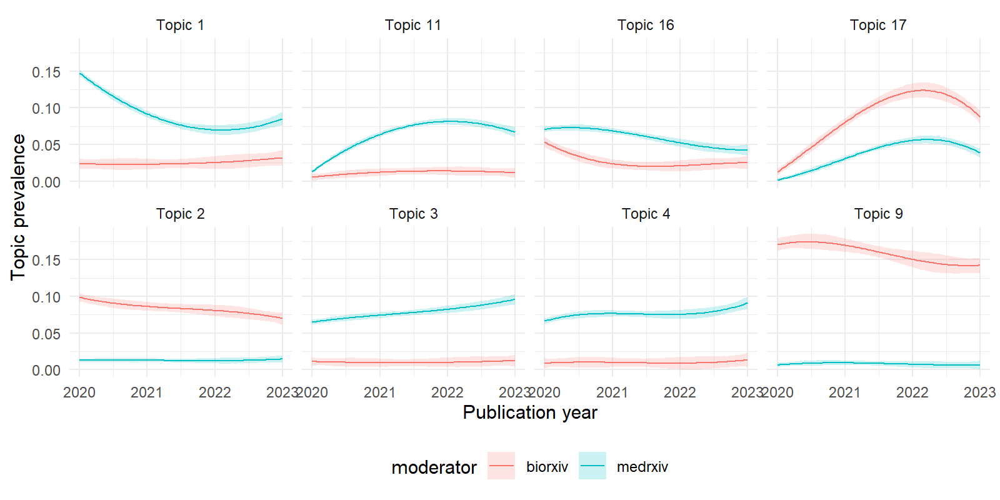
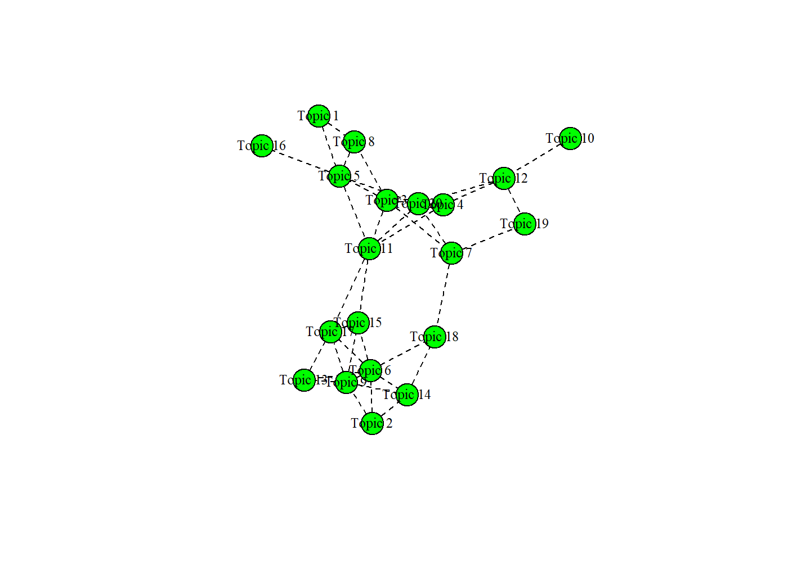

Structural Topic Modeling with R
Stefan Daume
11. April 2025
SRC 2024/25 PhD course ‘Data Science for Sustainable Development’
Structural Topic Modeling with R
Stefan Daume
Stockholm Resilience Centre, Stockholm University
& Beijer Institute of Ecological Economics
11. April 2025
Topic modeling: “Text as data”
The notion of “latent topics”
Topic modeling applies unsupervised probabilistic classification to identify the latent (“hidden”) topics in a collection of documents.
Supervised vs unsupervised learning/classification
Key difference: supervised learning requires labelled training data
Why topic modeling?
- summarize large text collections
- discover “latent” topics
- text-based (causal) inferences and testing social science theories
Examples
Long-term trends in climate change reports
A topography of climate change research (Callaghan, Minx, and Forster 2020)
- more than 400.000 climate change publications analysed
- over-representation of social sciences are in recent assessment reports
- demand of more solution-oriented research
Corporate sustainability reporting
Analysis of 9,500 corporate sustainability reports (published 1999 to 2015) (Székely and Brocke 2017):
- reports cover environmental, social, and economic sustainability
- economic sustainability is of increasing importance
- environmental sustainability is focused on emissions and energy
- biodiversity receives little attention
Climate communication
- topic modeling of organizational climate communication to identify impact of corporate funding on climate polarization (Farrell 2016)
Perception and communication of policies
Analysis of open-ended survey responses asking why carbon taxes are unfair (Povitkina et al. 2021):
- impact of demographic factors on perceptions of fairness
- implications for policy design
Topic modeling algorithm
How does it work?
Generative model that reverses the assumed document generation process.
Generative model

Illustration of the topic modeling process ((Daume, Albert, and von Gadow 2014) (adapted from (Blei 2012))).
Topic modelling algorithms
- LSA - Latent semantic analysis
- LDA - Latent dirichlet allocation (Blei, Ng, and Jordan 2003)
- CTM - Correlated topic model (Blei and Lafferty 2007)
- STM - Structural topic model (Roberts, Stewart, and Tingley 2019)
STM vs “vanilla LDA”
- STM extends CTM (i.e. assumes that topics are correlated)
- STM can incorporate arbitrary document meta-data into the topic model
Basic text mining concepts
- documents
- corpus
- tokens
- terms
Basic Topic modeling steps
- get documents to analyse
- preprocess
- create a corpus
- tokenize
- create document-term/feature matrix
- (evaluate alternative topic numbers)
- decide on K, the number of topics, and fit a topic model
- (validate semantic integrity of the topic model)
- test impact of document meta-data on topics
R packages to use
- quanteda
- tidytext
- (snowballc)
- (spacyr)
- stringr
- stm
Structural topic modeling applied
A Topic model of Covid preprints
The following slides step through a detailed example of fitting a topic model to preprints on bioRxiv and medRxiv related to Covid-19.
R code and detailed examples are available here:
- Code: https://github.com/sdaume/srcquantcourse
- Documentation: https://sdaume.github.io/srcquantcourse
Motivation
Getting data
Preprint data on bioRxiv and medRxiv can be retrieved via a public API with the help of the medrxivr R package.
Preparing preprint metadata
library(dplyr)
library(medrxivr)
# get publications from medRxiv and bioRxiv
pubs_biorxiv_raw <- medrxivr::mx_api_content(server = "biorxiv",
#from_date = "2019-01-01",
to_date = "2023-12-31")
pubs_medrxiv_raw <- medrxivr::mx_api_content(server = "medrxiv",
#from_date = "2019-01-01",
to_date = "2023-12-31")
pubs_biorxiv_raw <- pubs_biorxiv_raw %>%
mutate(server = "biorxiv")
pubs_medrxiv_raw <- pubs_medrxiv_raw %>%
mutate(server = "medrxiv")
preprints_raw <- dplyr::bind_rows(pubs_biorxiv_raw, pubs_medrxiv_raw)
save(preprints_raw, file = "./data-raw/preprints_raw.Rdata")Preprint metadata
glimpse(preprints_raw)
Rows: 365,526
Columns: 16
$ doi <chr> "10.1101/001891", "10.1101/001867", "10.1101…
$ title <chr> "Population genomics of Saccharomyces cerevi…
$ authors <chr> "Carlotta De Filippo;Monica Di Paola;Irene S…
$ author_corresponding <chr> "Duccio Cavalieri", "David Morrison", "Dav…
$ author_corresponding_institution <chr> "Fondazione E. Mach (FEM)", "Swedish Univers…
$ date <chr> "2014-01-17", "2014-01-17", "2014-01-17", "2…
$ version <chr> "1", "1", "1", "2", "1", "1", "1", "1", "2",…
$ license <chr> "cc_by_nc_nd", "cc_by_nc", "cc_by_nc", "cc_b…
$ category <chr> "Evolutionary Biology ", "Ecology ", "Molecu…
$ jatsxml <chr> "https://www.biorxiv.org/content/early/2014/…
$ abstract <chr> "The quest for the ecological niches of Sacc…
$ published <chr> "NA", "NA", "NA", "NA", "10.1093/bioinformat…
$ node <int> 1, 2, 3, 4, 5, 6, 7, 8, 9, 10, 11, 12, 13, 1…
$ link_page <chr> "https://www.biorxiv.org/content/10.1101/001…
$ link_pdf <chr> "https://www.biorxiv.org/content/10.1101/001…
$ server <chr> "biorxiv", "biorxiv", "biorxiv", "biorxiv", …Cleaning, filtering and annotating
library(dplyr)
preprints_cleaned <- preprints_raw %>%
group_by(doi) %>%
filter(version == max(version)) %>%
ungroup() %>%
distinct(doi, .keep_all = TRUE)Cleaning, filtering and annotating
preprints <- preprints_cleaned %>%
mutate(published = stringr::str_trim(published)) %>%
mutate(published = na_if(published, "NA")) %>%
mutate(is_published = as.numeric(!is.na(published))) %>%
mutate(is_published = case_when(is_published == 1 ~ "published",
is_published == 0 ~ "not published",
TRUE ~ "undefined")) %>%
mutate(year = lubridate::year(date)) %>%
filter(year >= 2020 & year <= 2023) %>%
select(doi, server, title, abstract, date, year, version, is_published)Cleaning, filtering and annotating
library(stringr)
keywords <- c("sars-cov", "covid")
search_pattern <- stringr::regex(paste(keywords, collapse = "|"),
ignore_case = TRUE)
covid_preprints <- preprints %>%
filter(stringr::str_detect(title, pattern = search_pattern) |
stringr::str_detect(abstract, pattern = search_pattern))Preprocessing the documents for text analysis
From text to data:
- create a corpus
- tokenize and preprocess
- create a document-feature matrix
Preprocessing the documents for text analysis
Text preprocessing choices could strongly influence the results of a text analysis!
Choices need to be:
- thoroughly explained,
- carefully evaluated and
- ideally be based on theory (see (Denny and Spirling 2018))
Create a corpus
library(quanteda)
pubs_corpus <- covid_preprints %>%
quanteda::corpus(docid_field = "doi", text_field = "abstract")
# pubs_corpus
# Corpus consisting of 29,692 documents and 6 docvars.Tokenize and preprocess
pubs_tokens <- pubs_corpus %>%
quanteda::tokens(remove_punct = TRUE,
remove_symbols = TRUE,
remove_numbers = TRUE,
remove_url = TRUE,
remove_separators = TRUE,
split_hyphens = TRUE) Create a Document-feature matrix
pubs_dfm <- pubs_tokens %>%
quanteda::dfm()Filter terms and documents
pubs_dfm <- pubs_dfm %>%
quanteda::dfm_remove(pattern = quanteda::stopwords("english")) #%>%
#quanteda::dfm_wordstem()# echo the result
> pubs_dfm
Document-feature matrix of: 29,692 documents, 82,472 features (99.87% sparse) and 6 docvars.
features
docs nitric oxide synthesised three isoforms synthases viz nnos neurons enos
10.1101/038398 6 6 1 1 1 1 1 1 2 1
10.1101/058511 0 0 0 0 0 0 0 0 0 0
10.1101/292979 0 0 0 2 0 0 0 0 0 0
10.1101/402370 0 0 0 0 0 0 0 0 0 0
10.1101/420737 0 0 0 0 0 0 0 0 0 0
10.1101/596700 0 0 0 0 0 0 0 0 0 0
[ reached max_ndoc ... 29,686 more documents, reached max_nfeat ... 82,462 more features ]Stemming
“Stemming” will reduce the matrix, but could result in loosing semantic information.
For example: “universal”, “university” and “universe” all have the stem “univers”!
More filtering
pubs_dfm <- pubs_dfm %>%
quanteda::dfm_remove(min_nchar = 2) %>%
quanteda::dfm_trim(min_docfreq = 2, docfreq_type = "count") %>%
quanteda::dfm_subset(quanteda::ntoken(.) > 4)# echo the result
> pubs_dfm
Document-feature matrix of: 29,691 documents, 37,093 features (99.72% sparse) and 6 docvars.
features
docs nitric oxide synthesised three isoforms synthases viz neurons enos endothelial
10.1101/038398 6 6 1 1 1 1 1 2 1 2
10.1101/058511 0 0 0 0 0 0 0 0 0 0
10.1101/292979 0 0 0 2 0 0 0 0 0 0
10.1101/402370 0 0 0 0 0 0 0 0 0 0
10.1101/420737 0 0 0 0 0 0 0 0 0 0
10.1101/596700 0 0 0 0 0 0 0 0 0 0
[ reached max_ndoc ... 29,685 more documents, reached max_nfeat ... 37,083 more features ]Fitting the STM topic model
library(stm)
covid_stm_docs <- quanteda::convert(pubs_dfm, to = "stm")
covid_model_K20 <- stm(documents = covid_stm_docs$documents,
vocab = covid_stm_docs$vocab,
data = covid_stm_docs$meta,
prevalence = ~ server * s(year),
K = 20,
verbose = TRUE,
seed = 9868467)Choosing ‘K’

Choosing ‘K’

Estimating the effect of document covariates
covid_effect_K20 <- estimateEffect(1:20 ~ server * s(year),
stmobj = covid_model_K20,
metadata = covid_stm_docs$meta)Basic topic model information
plot(covid_model_K20, n = 5)
Topic words
summary(covid_model_K20)
># A topic model with 20 topics, 29691 documents and a 37093 word dictionary.
># Topic 1 Top Words:
># Highest Prob: model, can, covid, transmission, epidemic, data, disease
># FREX: npis, mathematical, compartmental, scenarios, seir, reproduction, sir
># Lift: 1we, abms, ao_scplowbstractc_scplowas, apt, artefact, asilv, asymptotically
># Score: distancing, social, epidemic, reproduction, npis, model, r0
># Topic 2 Top Words:
># Highest Prob: cov, sars, drug, antiviral, activity, drugs, covid
># FREX: src, figdir, o_linksmallfig, c_fig, m_fig, o_fig, gif
># Lift: k777, gif, pmmov, wwtps, 13k, 17k, 18k
># Score: mpro, antiviral, drug, inhibitors, protease, drugs, compounds
># Topic 3 Top Words:
># Highest Prob: covid, risk, age, mortality, ci, associated, years
># FREX: hispanic, ethnicity, pregnant, racial, black, smoking, preterm
># Lift: 65s, asmr, assault, backgroundethnic, backgroundracial, backgroundsocio, brunt
># Score: ci, age, women, mortality, ethnicity, aor, hispanic
># Topic 4 Top Words:
># Highest Prob: covid, health, pandemic, mental, social, study, survey
># FREX: loneliness, emotional, attitude, depression, insecurity, mental, anxiety
># Lift: insecurity, accelerometers, amhara, angry, anovas, asd, asleep
># Score: mental, anxiety, depression, respondents, social, psychological, students
># Topic 5 Top Words:
># Highest Prob: sars, cov, infection, testing, transmission, cases, children
># FREX: ifr, seroprevalence, schools, school, contacts, household, attack
># Lift: inmates, 19y, 35y, 39y, 9a, abidjan, addscovid
># Score: school, seroprevalence, children, schools, household, transmission, testing
># Topic 6 Top Words:
># Highest Prob: cov, sars, virus, viral, coronavirus, respiratory, infection
># FREX: bats, cats, deer, animals, covs, wildlife, hcov
># Lift: cats, 5x106, aav6, aegyptiacus, aethiops, affinis, agm
># Score: cov, sars, mice, rna, viruses, coronaviruses, animals
># Topic 7 Top Words:
># Highest Prob: patients, covid, hospital, disease, clinical, severe, admission
># FREX: acei, admission, arbs, admitted, icu, aki, aceis
># Lift: 1.1x109, 2020r1g1a1a01006229, 2l, 4.0x109, 40y, ahmad, ahrq
># Score: patients, admission, icu, hospital, admitted, ci, hospitalized
># Topic 8 Top Words:
># Highest Prob: covid, cases, countries, number, deaths, data, pandemic
># FREX: cfr, italy, cities, country, countries, fatality, china
># Lift: 1000m, 1th, 55th, abysmally, abyss, adhanom, adminstat
># Score: countries, cases, lockdown, deaths, country, cfr, daily
># Topic 9 Top Words:
># Highest Prob: protein, binding, spike, sars, cov, ace2, rbd
># FREX: conformational, cryo, conformation, glycans, conformations, nanobodies, residues
># Lift: 13c, 6lzg, 6m0j, 6vw1, 6vxx, aabpu, abdab
># Score: binding, rbd, protein, spike, ace2, proteins, epitopes
># Topic 10 Top Words:
># Highest Prob: data, can, learning, covid, using, model, based
># FREX: aerosol, n95, aerosols, respirators, decontamination, airborne, machine
># Lift: elastomeric, forehead, papr, radiomics, exhaled, singing, 0.3m
># Score: learning, masks, aerosol, machine, respirators, n95, mask
># Topic 11 Top Words:
># Highest Prob: vaccine, vaccination, covid, middle, vaccines, dot, dose
># FREX: hesitancy, dot, vaccinate, middle, hesitant, rollout, ve
># Lift: #949850, acceptant, adjrr, aesis, amparo, analysesthe, andersen
># Score: vaccination, vaccine, dot, booster, dose, vaccinated, middle
># Topic 12 Top Words:
># Highest Prob: studies, care, covid, health, research, data, pandemic
># FREX: reviews, telemedicine, preprints, scoping, articles, blacksquare, publications
># Lift: preprints, 1.2m, aas, abbreviating, accustomed, activists, advisor
># Score: review, care, services, articles, reviews, pubmed, service
># Topic 13 Top Words:
># Highest Prob: sars, cov, genome, mutations, sequencing, viral, variants
># FREX: phylogenetic, gisaid, clades, wgs, genomes, genomic, haplotype
># Lift: clades, snvs, 1.1.7s, 11083g, 14408c, 17del, 20a
># Score: mutations, genome, wastewater, genomes, sequences, sequencing, genomic
># Topic 14 Top Words:
># Highest Prob: cells, cell, sars, cov, expression, infection, ace2
># FREX: autophagy, mirnas, mirna, at2, ifns, ciliated, scrna
># Lift: 25hc, angiotensinogen, antagonizes, apcs, arf6, asgr1, at2s
># Score: cells, expression, ace2, cell, genes, epithelial, tmprss2
># Topic 15 Top Words:
># Highest Prob: antibody, sars, cov, antibodies, igg, responses, vaccine
># FREX: iga, bau, igg, humoral, immunogenicity, as03, reactogenicity
># Lift: 1x1011, 28d, 30ug, ad26cov2, addas03, adhu5, atellica
># Score: igg, antibody, antibodies, neutralizing, rbd, vaccine, spike
># Topic 16 Top Words:
># Highest Prob: sars, cov, pcr, samples, rt, test, testing
># FREX: ag, rdt, rdts, lod, rt, panbio, kits
># Lift: poct, cobas, panbio, #yomecorono, 1.6x104, 10min, 15min
># Score: rt, pcr, assay, samples, saliva, detection, assays
># Topic 17 Top Words:
># Highest Prob: variants, omicron, variant, delta, ba, cov, sars
># FREX: omicron, ba, xbb, subvariants, delta, bq, voc
># Lift: 1.5s, 129s2, 1f11, 2.86s, 3b8, 417n, 75d30121c11061
># Score: omicron, ba, variants, variant, delta, mutations, voc
># Topic 18 Top Words:
># Highest Prob: covid, patients, disease, severe, immune, inflammatory, associated
># FREX: autoantibodies, ipf, balf, neutrophils, il, fibrosis, autoantibody
># Lift: 18f, 24hr, a2ar, aab, actinobacteria, activin, adiponectin
># Score: inflammatory, il, patients, cytokine, inflammation, cytokines, endothelial
># Topic 19 Top Words:
># Highest Prob: patients, treatment, covid, group, days, day, trial
># FREX: placebo, randomized, hcq, soc, azithromycin, arm, tocilizumab
># Lift: 200mg, 400mg, 500mg, 600mg, 800mg, aureobasidium, ayush
># Score: placebo, hcq, trial, patients, randomized, tocilizumab, hydroxychloroquine
># Topic 20 Top Words:
># Highest Prob: covid, symptoms, long, workers, infection, participants, study
># FREX: hcws, taste, smell, hcw, fatigue, workers, headache
># Lift: chemesthetic, dirty, eyewear, firefighters, ohs, principality, psychophysical
># Score: symptoms, hcws, workers, participants, symptom, hcw, fatigueTopic-document (‘gamma’) distribution
# retrieve the 'gamma' matrix
gamma <- tidytext::tidy(covid_model_K20, matrix = "gamma")
glimpse(gamma)
># Rows: 593,820
># Columns: 3
># $ document <int> 1, 2, 3, 4, 5, 6, 7, 8, 9, 10, 11, 12, 13, 14, 15, 16, 17, 18…
># $ topic <int> 1, 1, 1, 1, 1, 1, 1, 1, 1, 1, 1, 1, 1, 1, 1, 1, 1, 1, 1, 1, 1…
># $ gamma <dbl> 0.001283143, 0.003547179, 0.003745510, 0.005495076, 0.0630417…Term-topic (‘beta’) distribution
# retrieve the 'beta' matrix
beta <- tidytext::tidy(covid_model_K20, matrix = "beta")
glimpse(beta)
># Rows: 741,860
># Columns: 3
># $ topic <int> 1, 2, 3, 4, 5, 6, 7, 8, 9, 10, 11, 12, 13, 14, 15, 16, 17, 18, 1…
># $ term <chr> "#1", "#1", "#1", "#1", "#1", "#1", "#1", "#1", "#1", "#1", "#1"…
># $ beta <dbl> 1.874650e-112, 2.519509e-119, 1.248970e-118, 6.665355e-160, 3.21…Understanding and labeling topics

Word clouds showing the 50 most probable terms for selected topics. FREX terms are highlighted in orange. Words are scaled by normalized probability.
Covariate effects
summary(covid_effect_K20)
>#
># Call:
># estimateEffect(formula = 1:20 ~ server * s(year), stmobj = covid_model_K20,
># metadata = covid_stm_docs$meta)
>#
>#
># Topic 1:
>#
># Coefficients:
># Estimate Std. Error t value Pr(>|t|)
># (Intercept) 0.0234515 0.0036964 6.344 2.27e-10 ***
># servermedrxiv 0.1239364 0.0043129 28.736 < 2e-16 ***
># s(year)1 -0.0019176 0.0147550 -0.130 0.897
># s(year)2 -0.0007684 0.0153892 -0.050 0.960
># s(year)3 0.0084132 0.0066881 1.258 0.208
># servermedrxiv:s(year)1 -0.0695085 0.0173024 -4.017 5.90e-05 ***
># servermedrxiv:s(year)2 -0.0965498 0.0188849 -5.113 3.20e-07 ***
># servermedrxiv:s(year)3 -0.0705657 0.0084431 -8.358 < 2e-16 ***
># ---
># Signif. codes: 0 '***' 0.001 '**' 0.01 '*' 0.05 '.' 0.1 ' ' 1
>#
>#
># Topic 2:
>#
># Coefficients:
># Estimate Std. Error t value Pr(>|t|)
># (Intercept) 0.098665 0.002880 34.262 < 2e-16 ***
># servermedrxiv -0.085926 0.003158 -27.212 < 2e-16 ***
># s(year)1 -0.019958 0.011371 -1.755 0.0792 .
># s(year)2 -0.011330 0.013466 -0.841 0.4002
># s(year)3 -0.028581 0.004509 -6.338 2.36e-10 ***
># servermedrxiv:s(year)1 0.021636 0.012575 1.721 0.0853 .
># servermedrxiv:s(year)2 0.008216 0.014417 0.570 0.5688
># servermedrxiv:s(year)3 0.030329 0.005231 5.797 6.81e-09 ***
># ---
># Signif. codes: 0 '***' 0.001 '**' 0.01 '*' 0.05 '.' 0.1 ' ' 1
>#
>#
># Topic 3:
>#
># Coefficients:
># Estimate Std. Error t value Pr(>|t|)
># (Intercept) 0.011092 0.002813 3.943 8.06e-05 ***
># servermedrxiv 0.053932 0.003297 16.356 < 2e-16 ***
># s(year)1 -0.002642 0.011400 -0.232 0.817
># s(year)2 -0.001958 0.011826 -0.166 0.868
># s(year)3 0.001212 0.004877 0.248 0.804
># servermedrxiv:s(year)1 0.015020 0.013729 1.094 0.274
># servermedrxiv:s(year)2 0.014190 0.014918 0.951 0.341
># servermedrxiv:s(year)3 0.029833 0.006503 4.588 4.50e-06 ***
># ---
># Signif. codes: 0 '***' 0.001 '**' 0.01 '*' 0.05 '.' 0.1 ' ' 1
>#
>#
># Topic 4:
>#
># Coefficients:
># Estimate Std. Error t value Pr(>|t|)
># (Intercept) 0.008823 0.003238 2.724 0.00644 **
># servermedrxiv 0.057738 0.003798 15.203 < 2e-16 ***
># s(year)1 0.004814 0.013529 0.356 0.72200
># s(year)2 -0.005213 0.014162 -0.368 0.71282
># s(year)3 0.004560 0.005826 0.783 0.43375
># servermedrxiv:s(year)1 0.020339 0.016434 1.238 0.21587
># servermedrxiv:s(year)2 -0.004031 0.018172 -0.222 0.82445
># servermedrxiv:s(year)3 0.020310 0.007672 2.647 0.00812 **
># ---
># Signif. codes: 0 '***' 0.001 '**' 0.01 '*' 0.05 '.' 0.1 ' ' 1
>#
>#
># Topic 5:
>#
># Coefficients:
># Estimate Std. Error t value Pr(>|t|)
># (Intercept) 0.0049430 0.0023398 2.113 0.0346 *
># servermedrxiv 0.0542764 0.0027865 19.479 <2e-16 ***
># s(year)1 -0.0008134 0.0094139 -0.086 0.9311
># s(year)2 0.0001471 0.0099193 0.015 0.9882
># s(year)3 0.0010546 0.0041428 0.255 0.7991
># servermedrxiv:s(year)1 0.0260782 0.0114114 2.285 0.0223 *
># servermedrxiv:s(year)2 -0.0018302 0.0120509 -0.152 0.8793
># servermedrxiv:s(year)3 -0.0084726 0.0053670 -1.579 0.1144
># ---
># Signif. codes: 0 '***' 0.001 '**' 0.01 '*' 0.05 '.' 0.1 ' ' 1
>#
>#
># Topic 6:
>#
># Coefficients:
># Estimate Std. Error t value Pr(>|t|)
># (Intercept) 0.148602 0.003866 38.434 < 2e-16 ***
># servermedrxiv -0.115782 0.004229 -27.376 < 2e-16 ***
># s(year)1 -0.021101 0.013517 -1.561 0.1185
># s(year)2 -0.049243 0.012155 -4.051 5.11e-05 ***
># s(year)3 -0.043708 0.006071 -7.200 6.18e-13 ***
># servermedrxiv:s(year)1 0.005903 0.015136 0.390 0.6965
># servermedrxiv:s(year)2 0.035413 0.013879 2.552 0.0107 *
># servermedrxiv:s(year)3 0.031026 0.006946 4.467 7.97e-06 ***
># ---
># Signif. codes: 0 '***' 0.001 '**' 0.01 '*' 0.05 '.' 0.1 ' ' 1
>#
>#
># Topic 7:
>#
># Coefficients:
># Estimate Std. Error t value Pr(>|t|)
># (Intercept) 0.010755 0.002934 3.665 0.000247 ***
># servermedrxiv 0.085991 0.003494 24.613 < 2e-16 ***
># s(year)1 -0.004033 0.011512 -0.350 0.726124
># s(year)2 -0.007886 0.012201 -0.646 0.518060
># s(year)3 -0.003443 0.005144 -0.669 0.503331
># servermedrxiv:s(year)1 -0.049305 0.014424 -3.418 0.000631 ***
># servermedrxiv:s(year)2 -0.019589 0.015580 -1.257 0.208630
># servermedrxiv:s(year)3 -0.038387 0.006513 -5.894 3.82e-09 ***
># ---
># Signif. codes: 0 '***' 0.001 '**' 0.01 '*' 0.05 '.' 0.1 ' ' 1
>#
>#
># Topic 8:
>#
># Coefficients:
># Estimate Std. Error t value Pr(>|t|)
># (Intercept) 0.027280 0.003058 8.922 < 2e-16 ***
># servermedrxiv 0.108710 0.003615 30.070 < 2e-16 ***
># s(year)1 -0.012889 0.012357 -1.043 0.29692
># s(year)2 -0.018333 0.012554 -1.460 0.14423
># s(year)3 -0.017113 0.005274 -3.245 0.00118 **
># servermedrxiv:s(year)1 -0.088615 0.014896 -5.949 2.73e-09 ***
># servermedrxiv:s(year)2 -0.046434 0.015515 -2.993 0.00277 **
># servermedrxiv:s(year)3 -0.060223 0.006653 -9.052 < 2e-16 ***
># ---
># Signif. codes: 0 '***' 0.001 '**' 0.01 '*' 0.05 '.' 0.1 ' ' 1
>#
>#
># Topic 9:
>#
># Coefficients:
># Estimate Std. Error t value Pr(>|t|)
># (Intercept) 0.170474 0.004565 37.348 < 2e-16 ***
># servermedrxiv -0.163920 0.004774 -34.337 < 2e-16 ***
># s(year)1 0.018139 0.018989 0.955 0.339489
># s(year)2 -0.034923 0.019954 -1.750 0.080097 .
># s(year)3 -0.027951 0.006600 -4.235 2.29e-05 ***
># servermedrxiv:s(year)1 -0.010980 0.020160 -0.545 0.585981
># servermedrxiv:s(year)2 0.033233 0.021775 1.526 0.126979
># servermedrxiv:s(year)3 0.027871 0.007250 3.844 0.000121 ***
># ---
># Signif. codes: 0 '***' 0.001 '**' 0.01 '*' 0.05 '.' 0.1 ' ' 1
>#
>#
># Topic 10:
>#
># Coefficients:
># Estimate Std. Error t value Pr(>|t|)
># (Intercept) 0.0447574 0.0033294 13.443 < 2e-16 ***
># servermedrxiv 0.0117705 0.0036073 3.263 0.0011 **
># s(year)1 0.0040479 0.0146668 0.276 0.7826
># s(year)2 0.0002623 0.0132770 0.020 0.9842
># s(year)3 0.0261219 0.0058535 4.463 8.13e-06 ***
># servermedrxiv:s(year)1 -0.0176944 0.0162961 -1.086 0.2776
># servermedrxiv:s(year)2 -0.0303798 0.0153824 -1.975 0.0483 *
># servermedrxiv:s(year)3 -0.0408835 0.0069903 -5.849 5.01e-09 ***
># ---
># Signif. codes: 0 '***' 0.001 '**' 0.01 '*' 0.05 '.' 0.1 ' ' 1
>#
>#
># Topic 11:
>#
># Coefficients:
># Estimate Std. Error t value Pr(>|t|)
># (Intercept) 0.005048 0.002350 2.148 0.03172 *
># servermedrxiv 0.008220 0.002685 3.061 0.00221 **
># s(year)1 0.010261 0.009886 1.038 0.29933
># s(year)2 0.009911 0.010201 0.972 0.33129
># s(year)3 0.006487 0.004252 1.525 0.12717
># servermedrxiv:s(year)1 0.056818 0.011643 4.880 1.07e-06 ***
># servermedrxiv:s(year)2 0.073874 0.012513 5.904 3.59e-09 ***
># servermedrxiv:s(year)3 0.046904 0.005889 7.964 1.72e-15 ***
># ---
># Signif. codes: 0 '***' 0.001 '**' 0.01 '*' 0.05 '.' 0.1 ' ' 1
>#
>#
># Topic 12:
>#
># Coefficients:
># Estimate Std. Error t value Pr(>|t|)
># (Intercept) 0.022004 0.002821 7.799 6.44e-15 ***
># servermedrxiv 0.041906 0.003351 12.505 < 2e-16 ***
># s(year)1 -0.008612 0.011290 -0.763 0.446
># s(year)2 -0.005776 0.012238 -0.472 0.637
># s(year)3 -0.002634 0.004890 -0.539 0.590
># servermedrxiv:s(year)1 -0.006542 0.013997 -0.467 0.640
># servermedrxiv:s(year)2 0.009470 0.015896 0.596 0.551
># servermedrxiv:s(year)3 0.034847 0.006471 5.385 7.30e-08 ***
># ---
># Signif. codes: 0 '***' 0.001 '**' 0.01 '*' 0.05 '.' 0.1 ' ' 1
>#
>#
># Topic 13:
>#
># Coefficients:
># Estimate Std. Error t value Pr(>|t|)
># (Intercept) 0.104347 0.003136 33.278 < 2e-16 ***
># servermedrxiv -0.086326 0.003442 -25.084 < 2e-16 ***
># s(year)1 -0.031507 0.015444 -2.040 0.0414 *
># s(year)2 -0.027982 0.015186 -1.843 0.0654 .
># s(year)3 -0.023283 0.005574 -4.177 2.96e-05 ***
># servermedrxiv:s(year)1 0.077694 0.018009 4.314 1.61e-05 ***
># servermedrxiv:s(year)2 0.028379 0.017050 1.664 0.0960 .
># servermedrxiv:s(year)3 0.041046 0.006634 6.187 6.21e-10 ***
># ---
># Signif. codes: 0 '***' 0.001 '**' 0.01 '*' 0.05 '.' 0.1 ' ' 1
>#
>#
># Topic 14:
>#
># Coefficients:
># Estimate Std. Error t value Pr(>|t|)
># (Intercept) 0.124590 0.003384 36.820 <2e-16 ***
># servermedrxiv -0.112726 0.003591 -31.387 <2e-16 ***
># s(year)1 0.004251 0.015015 0.283 0.777
># s(year)2 -0.007534 0.015561 -0.484 0.628
># s(year)3 0.007579 0.006327 1.198 0.231
># servermedrxiv:s(year)1 -0.003159 0.015996 -0.198 0.843
># servermedrxiv:s(year)2 0.005290 0.016662 0.317 0.751
># servermedrxiv:s(year)3 -0.005121 0.007090 -0.722 0.470
># ---
># Signif. codes: 0 '***' 0.001 '**' 0.01 '*' 0.05 '.' 0.1 ' ' 1
>#
>#
># Topic 15:
>#
># Coefficients:
># Estimate Std. Error t value Pr(>|t|)
># (Intercept) 0.053500 0.003506 15.260 < 2e-16 ***
># servermedrxiv -0.027398 0.003954 -6.930 4.3e-12 ***
># s(year)1 0.044569 0.014766 3.018 0.00254 **
># s(year)2 0.024796 0.015595 1.590 0.11185
># s(year)3 0.017761 0.006468 2.746 0.00604 **
># servermedrxiv:s(year)1 0.003689 0.017297 0.213 0.83112
># servermedrxiv:s(year)2 0.033607 0.017897 1.878 0.06042 .
># servermedrxiv:s(year)3 -0.003409 0.007628 -0.447 0.65498
># ---
># Signif. codes: 0 '***' 0.001 '**' 0.01 '*' 0.05 '.' 0.1 ' ' 1
>#
>#
># Topic 16:
>#
># Coefficients:
># Estimate Std. Error t value Pr(>|t|)
># (Intercept) 0.0531712 0.0034678 15.333 < 2e-16 ***
># servermedrxiv 0.0176174 0.0040551 4.344 1.40e-05 ***
># s(year)1 -0.0494979 0.0130158 -3.803 0.000143 ***
># s(year)2 -0.0294507 0.0131905 -2.233 0.025574 *
># s(year)3 -0.0279314 0.0057186 -4.884 1.04e-06 ***
># servermedrxiv:s(year)1 0.0608908 0.0150385 4.049 5.16e-05 ***
># servermedrxiv:s(year)2 0.0011834 0.0159698 0.074 0.940929
># servermedrxiv:s(year)3 -0.0007032 0.0072105 -0.098 0.922307
># ---
># Signif. codes: 0 '***' 0.001 '**' 0.01 '*' 0.05 '.' 0.1 ' ' 1
>#
>#
># Topic 17:
>#
># Coefficients:
># Estimate Std. Error t value Pr(>|t|)
># (Intercept) 0.012520 0.002371 5.280 1.30e-07 ***
># servermedrxiv -0.010867 0.002660 -4.086 4.40e-05 ***
># s(year)1 0.062508 0.012011 5.204 1.96e-07 ***
># s(year)2 0.167150 0.016081 10.394 < 2e-16 ***
># s(year)3 0.074767 0.005337 14.010 < 2e-16 ***
># servermedrxiv:s(year)1 -0.043602 0.013428 -3.247 0.00117 **
># servermedrxiv:s(year)2 -0.080085 0.017937 -4.465 8.05e-06 ***
># servermedrxiv:s(year)3 -0.037938 0.006115 -6.204 5.58e-10 ***
># ---
># Signif. codes: 0 '***' 0.001 '**' 0.01 '*' 0.05 '.' 0.1 ' ' 1
>#
>#
># Topic 18:
>#
># Coefficients:
># Estimate Std. Error t value Pr(>|t|)
># (Intercept) 0.055671 0.003054 18.226 < 2e-16 ***
># servermedrxiv -0.019875 0.003469 -5.730 1.02e-08 ***
># s(year)1 0.005595 0.011997 0.466 0.64098
># s(year)2 0.004178 0.012679 0.330 0.74178
># s(year)3 0.029362 0.005773 5.086 3.67e-07 ***
># servermedrxiv:s(year)1 -0.004546 0.014663 -0.310 0.75652
># servermedrxiv:s(year)2 -0.004705 0.015357 -0.306 0.75934
># servermedrxiv:s(year)3 -0.020633 0.006881 -2.998 0.00272 **
># ---
># Signif. codes: 0 '***' 0.001 '**' 0.01 '*' 0.05 '.' 0.1 ' ' 1
>#
>#
># Topic 19:
>#
># Coefficients:
># Estimate Std. Error t value Pr(>|t|)
># (Intercept) 0.0135420 0.0025816 5.246 1.57e-07 ***
># servermedrxiv 0.0273553 0.0030260 9.040 < 2e-16 ***
># s(year)1 0.0005638 0.0100195 0.056 0.9551
># s(year)2 -0.0062746 0.0106155 -0.591 0.5545
># s(year)3 -0.0030674 0.0043700 -0.702 0.4827
># servermedrxiv:s(year)1 -0.0031003 0.0122137 -0.254 0.7996
># servermedrxiv:s(year)2 0.0280690 0.0131424 2.136 0.0327 *
># servermedrxiv:s(year)3 0.0027473 0.0057495 0.478 0.6328
># ---
># Signif. codes: 0 '***' 0.001 '**' 0.01 '*' 0.05 '.' 0.1 ' ' 1
>#
>#
># Topic 20:
>#
># Coefficients:
># Estimate Std. Error t value Pr(>|t|)
># (Intercept) 0.0067098 0.0019459 3.448 0.000565 ***
># servermedrxiv 0.0314496 0.0021906 14.357 < 2e-16 ***
># s(year)1 -0.0013966 0.0077057 -0.181 0.856184
># s(year)2 -0.0001134 0.0081834 -0.014 0.988945
># s(year)3 0.0005030 0.0033764 0.149 0.881568
># servermedrxiv:s(year)1 0.0085872 0.0096124 0.893 0.371678
># servermedrxiv:s(year)2 0.0129469 0.0106830 1.212 0.225552
># servermedrxiv:s(year)3 0.0212786 0.0045697 4.656 3.23e-06 ***
># ---
># Signif. codes: 0 '***' 0.001 '**' 0.01 '*' 0.05 '.' 0.1 ' ' 1Publication year

Plotting with stm
plot(covid_effect_K20,
covariate = "year",
method = "continuous",
model = covid_model_K20,
topics = c(1, 16, 11),
xaxt = "n",
main = 'Effect of publication year on prevalence of Topic 1 ("epidemic \nmodels"), Topic 16 ("testing") and Topic 11 ("vaccines")',
labeltype = "prob",
xlab = "Publication year")
axis(1, at = c("2020","2021","2022","2023"), labels = c(2020, 2021, 2022, 2023))Plotting with stminsights

‘Treatment’ effect: preprint server

‘Treatment’ effect: preprint server

Combination of preprint server and publication year

Using stminsight

Exploring the topic structure
Topic correlations
covid_topic_correlations <- topicCorr(covid_model_K20)
plot(covid_topic_correlations)
Network analysis of topics
Exercises
Exploring biodiversity preprints
- Create a subset of preprints referencing “biodiversity”; fit a topic model with 10 topics and explore the interacting effect of covariates
is_publishedandyear(nots(year)).
Thank You!
Key Resources
- quanteda R package
- stm: An R Package for Structural Topic Models (Roberts, Stewart, and Tingley 2019)
- oolong R package
References
Blei, David. 2012. “Probabilistic Topic Models.” Communications of the ACM 55 (4): 77–84. https://doi.org/10.1145/2133806.2133826.
Blei, David M., and John D. Lafferty. 2007. “A Correlated Topic Model of Science.” The Annals of Applied Statistics 1 (1): 17–35.
Blei, David M., Andrew Y. Ng, and Michael I. Jordan. 2003. “Latent Dirichlet Allocation.” The Journal of Machine Learning Research 3 (March): 993–1022.
Callaghan, Max W., Jan C. Minx, and Piers M. Forster. 2020. “A Topography of Climate Change Research.” Nature Climate Change 10 (2): 118–23. https://doi.org/10.1038/s41558-019-0684-5.
Daume, Stefan, Matthias Albert, and Klaus von Gadow. 2014. “Assessing Citizen Science Opportunities in Forest Monitoring Using Probabilistic Topic Modelling.” Forest Ecosystems 1 (1): 11. https://doi.org/10.1186/s40663-014-0011-6.
Denny, Matthew J., and Arthur Spirling. 2018. “Text Preprocessing for Unsupervised Learning: Why It Matters, When It Misleads, and What to Do About It.” Political Analysis 26 (2): 168–89. https://doi.org/10.1017/pan.2017.44.
Farrell, Justin. 2016. “Corporate Funding and Ideological Polarization About Climate Change.” Proceedings of the National Academy of Sciences of the United States of America 113 (1): 92–97. https://doi.org/10.1073/pnas.1509433112.
Povitkina, Marina, Sverker Carlsson Jagers, Simon Matti, and Johan Martinsson. 2021. “Why Are Carbon Taxes Unfair? Disentangling Public Perceptions of Fairness.” Global Environmental Change 70 (September): 102356. https://doi.org/10.1016/j.gloenvcha.2021.102356.
Roberts, Margaret E., Brandon M. Stewart, and Dustin Tingley. 2019. “Stm: An R Package for Structural Topic Models.” Journal of Statistical Software 91 (1): 1–40. https://doi.org/10.18637/jss.v091.i02.
Roberts, Margaret E., Brandon M. Stewart, Dustin Tingley, Christopher Lucas, Jetson Leder-Luis, Shana Kushner Gadarian, Bethany Albertson, and David G. Rand. 2014. “Structural Topic Models for Open-Ended Survey Responses.” American Journal of Political Science 58 (4): 1064–82. https://doi.org/10.1111/ajps.12103.
Székely, Nadine, and Jan vom Brocke. 2017. “What Can We Learn from Corporate Sustainability Reporting? Deriving Propositions for Research and Practice from over 9,500 Corporate Sustainability Reports Published Between 1999 and 2015 Using Topic Modelling Technique.” PLOS ONE 12 (4): e0174807. https://doi.org/10.1371/journal.pone.0174807.
Colophon
“Structural Topic Modeling with R” by Stefan Daume
Presented at DS4SD SRC R course on 11. April 2025.
This presentation can be cited using: doi:…
PRESENTATION DETAILS
Author/Affiliation: Stefan Daume, Stockholm Resilience Centre, Stockholm University
Presentation URL: https://sdaume.github.io/ds4sd-2024-modules/topicmodels/slides/
Presentation Source: [TBD]
Presentation PDF: [TBD]
CREDITS & LICENSES
This presentation is delivered with the help of several free and open source tools and libraries. It utilises the reveal.js presentation framework and has been created using RMarkdown, knitr, RStudio and Pandoc. highlight.js provides syntax highlighting for code sections. MathJax supports the rendering of mathematical notations. PDF and JPG copies of this presentation were generated with DeckTape. Please note the respective licenses of these tools and libraries.
If not noted and attributed otherwise, the contents (text, charts, images) of this presentation are Copyright © 2025 of the Author and provided under a CC BY 4.0 public domain license.